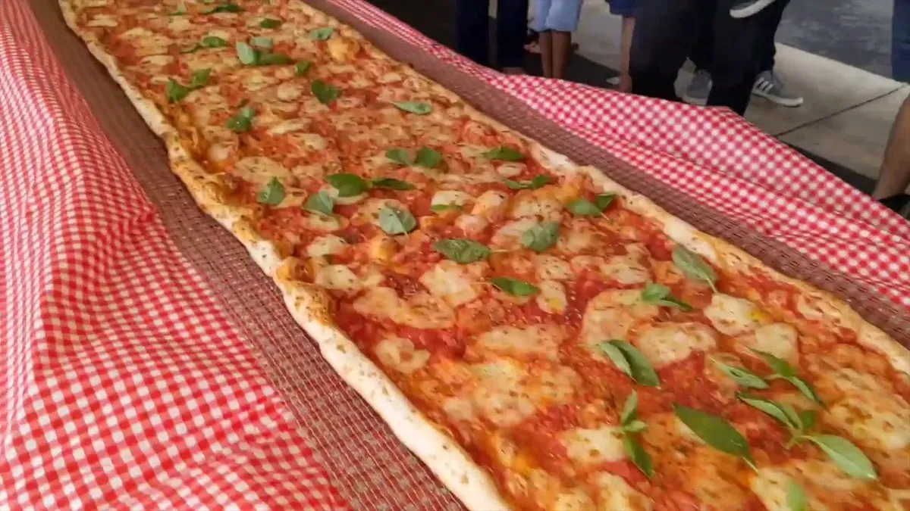

Easy pizza Recipe

Description
Make perfect pizza at home with this classic homemade pizza recipe,
including a pizza dough recipe, topping suggestions, and step-by-step
instructions with photos.
The pizza dough recipe makes enough dough for two 10 to 12 inch
pizzas.
He thought the dough was "slimy and gross" but he loved picking his own
toppings, and the finished product was "awesome".
Ingredients
- 170g mozzarella cheese, shredded
- 28g cream cheese
- 85g almond flour
- 1 tsp white wine vinegar
- 1 egg
- ½ tsp salt
- onion
- tomato
- parcely
- mushroom
- olives
Steps
-
Place the warm water in the large bowl of a heavy duty stand mixer.
Sprinkle the yeast over the warm water and let it sit for 5 minutes
until the yeast is dissolved.
-
Knead the pizza dough on low to medium speed using the dough hook about
7-10 minutes.
-
Spread a thin layer of olive oil over the inside of a large bowl. Place
the pizza dough in the bowl and turn it around so that it gets coated
with the oil.
-
Preheat the oven to 475°F for at least 30 minutes, preferably an hour.
If you don't have a pizza stone, you can use a pizza pan or a thick
baking sheet; you need something that will not warp at high
temperatures.
-
Remove the plastic cover from the dough. Dust your hands with flour and
push the dough down so it deflates a bit. Divide the dough in half.
-
Prepare your desired toppings. Note that you are not going to want to
load up each pizza with a lot of toppings as the crust will end up not
crisp that way.
-
Working one ball of dough at a time, take one ball of dough and flatten
it with your hands on a lightly floured work surface.
-
Starting at the center and working outwards, use your fingertips to
press the dough to 1/2-inch thick. Turn and stretch the dough until it
will not stretch further.
-
Let the dough relax 5 minutes and then continue to stretch it until it
reaches the desired diameter—10 to 12 inches.
-
If a hole appears in your dough, place the dough on a floured surface
and push the dough back together to seal the hole.
-
Sprinkle some cornmeal on the baking stone in the oven (watch your
hands, the oven is hot!). Gently shake the peel to see if the dough will
easily slide, if not, gently lift up the edges of the pizza and add a
bit more cornmeal.